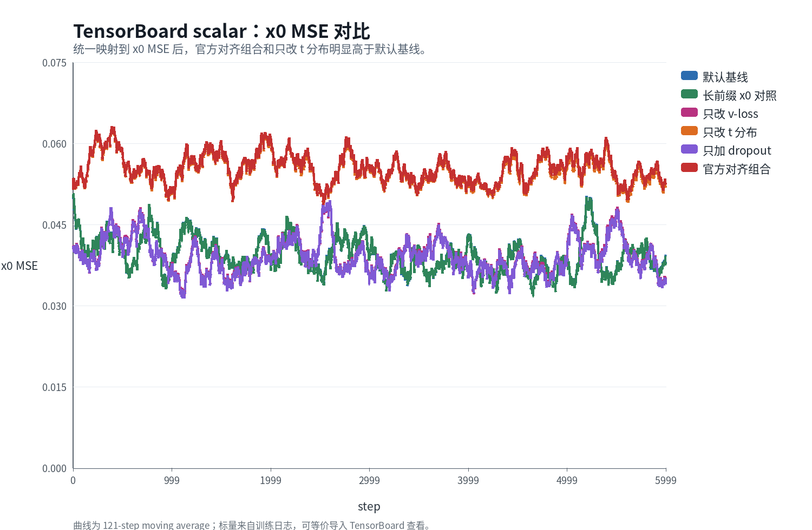
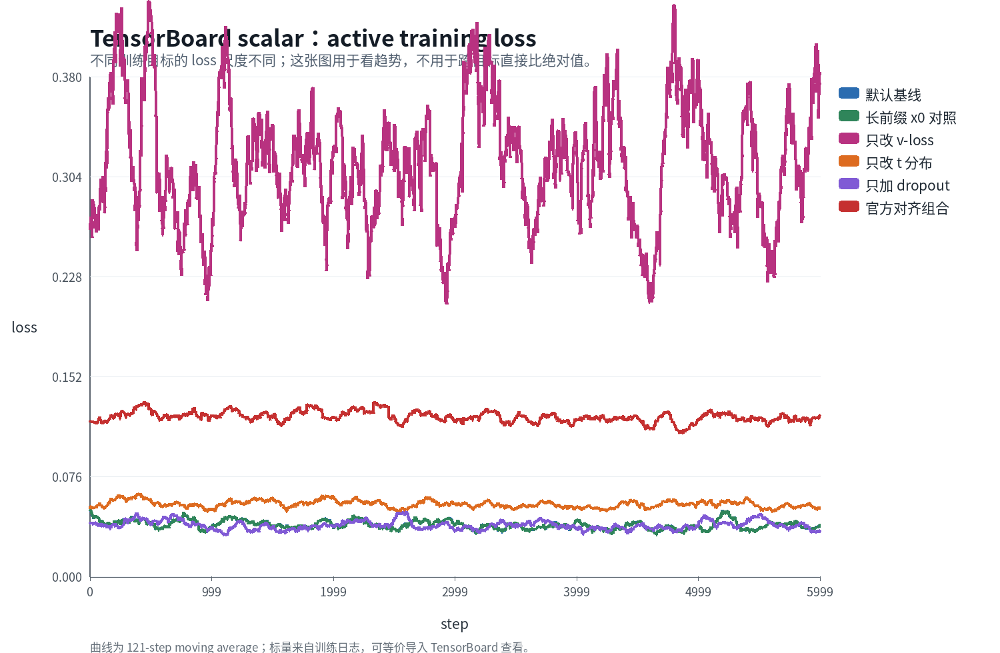
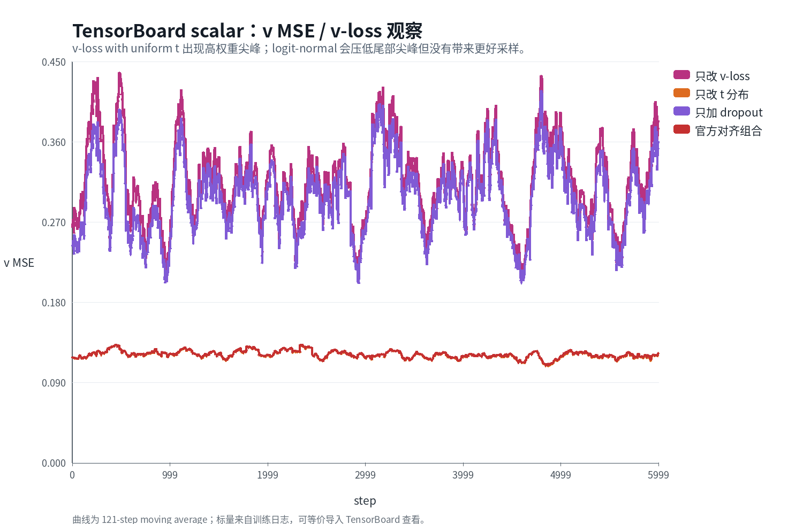
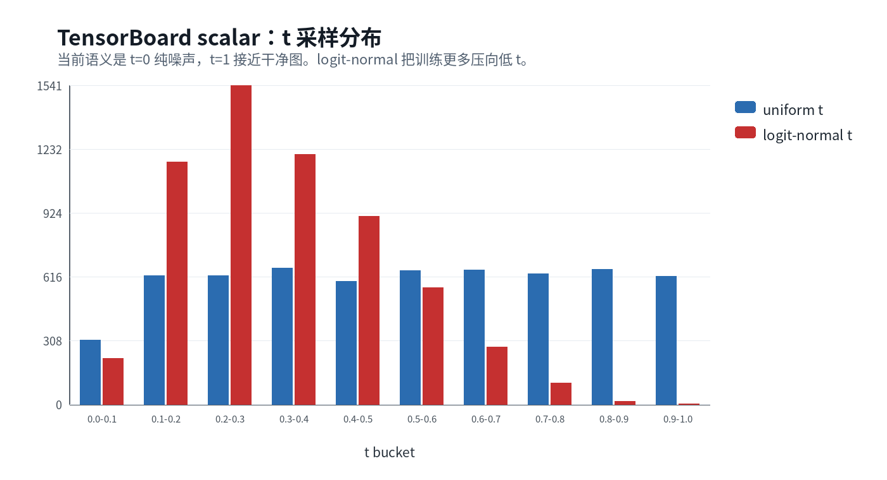
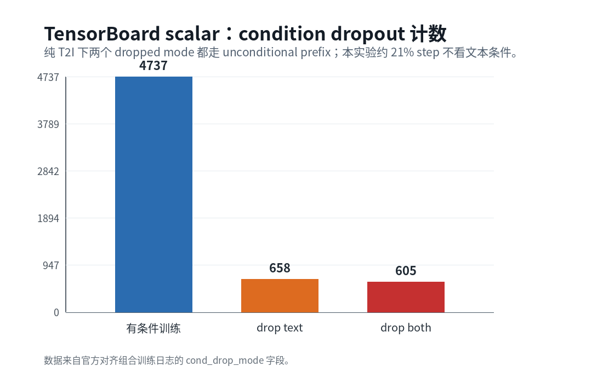
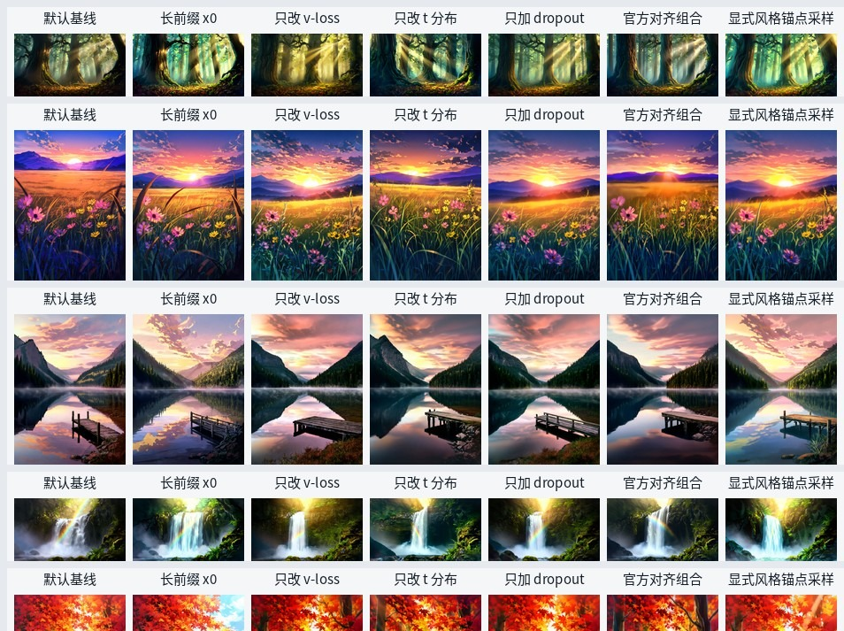

针对 SenseNova-U1-8B-MoT 基模的 LoRA / Partial Fine-tuning 训练器维护团队
SenseNova-U1 公开技术报告披露的 text-to-image 流匹配训练在三个关键算法层 上做出特定选择：以速度 (velocity) 为目标的损失函数、logit-normal 时间步采样、 以及 condition dropout 形式的无分类器引导校准。在大规模预训练或后训阶段， 这些选择共同支撑了模型最终行为。但对小数据风格 LoRA 微调而言，是否应当继承 这一组合并未由现有公开文献回答。本文以 56 张 Hayateluc 风格图像与 8B-MoT 基模 为受控环境，对三个官方算法层逐一做单变量消融，并与 v18 本地基线 (x0-MSE 损失、uniform 时间步、零 dropout) 进行对比，同时纳入 prompt 前缀格式作为额外 受控变量。所有训练运行 6000 步，并在统一 prompt 集上做多步采样以做视觉评估。 结果表明，逐项替换为官方设置后，训练 loss 不发散，但完整采样图像呈 现可观察的图像重建质量劣化：(i) velocity 损失导致天空与大面积渐变上 规则横向条纹 (banding) 与 photoreal 化；(ii) logit-normal 时间步导致大面积平 滑色块上高频 speckle 噪点与色阶离散化；(iii) 两者组合时进一步出现远景元素缺 失、构图被压缩的结构扭曲 (structural distortion)，已超出 "style drift" 范畴而 属重建质量缺陷。condition dropout 是三项中唯一未引入可见劣化的项，反而轻 微改善图像结构质量。基于该结论，我们将仓库的发布默认值保持为本地基线，并 把官方对齐组合作为可选的 ablation 配置发布，供研究复现使用。
Keywords — 流匹配 (flow matching) · LoRA 微调 · 消融研究 · classifier-free guidance · 风格迁移 · SenseNova-U1
SenseNova-U1 公开报告 [1] 在 text-to-image 流匹配训练中采用三个具体的算法层： 速度损失 (velocity loss)、logit-normal 时间步采样、以及在条件 prefix 上的 dropout 作为 classifier-free guidance (CFG) 的校准信号。这一组合在该报告所对应的大规模 数据与多阶段训练管线下是合理且互相支撑的设计选择。
与之相对，在小数据风格 LoRA 微调场景下，训练目标的属性发生了实质变化：训练数据 规模通常在 101–102 张量级，目的是从基模注入一个相对集中的 视觉风格 fingerprint，而非更新一个完整的世界模型。这种情况下，将官方训练配置整 体迁移过来是否仍最优，并不显然。
本文以 SenseNova-U1-8B-MoT 为基模，在 56 张 Hayateluc 风格图像数据上做受控消 融。具体贡献为三点：
(i) 提出一组单变量消融配置，分别替换官方三个算法层中的一个，并 与 v18 本地基线对照，使得每对差异可被归因到单一 lever。 (ii) 指出 prompt 前缀格式 (训练时 caption 中风格 anchor 的位置) 是一个独立而强的混淆变量；在没有控制该变量前，单纯的 lever 替换会得到误导性的视 觉差异。 (iii) 基于训练标量曲线与多步采样视觉评估，识别每个官方 lever 引入的具体图像重建质量缺陷：velocity 损失→横纹 + photoreal 化、logit-normal 时间步→噪点 + 色阶离散化、两者叠加→结构扭曲。condition dropout 是唯一对小数据 风格 LoRA 无损甚至有益的官方算法层。
设 x0 为目标图像 patch，ε 为各向同 性高斯噪声，时间步 t ∈ [tε, 1 − tε]。本仓库与上游推理共用如下线性插 值约定 (linear-z schedule，t 越接近 1 越接 近干净图)：
在 x0-MSE 损失下，训练目标为 Lx0 = 𝔼 ‖xθ(zt,t) − x0‖2； 在 velocity 损失下，Lv = 𝔼 ‖vθ(zt,t) − v★‖2。代入 v★ = (x0 − zt)/(1 − t) 与 vθ = (xθ − zt)/(1 − t)，可得二者关系为
即 velocity 损失等价于以 (1 − t)−2 重新加权的 x0-MSE。该权重在 t → 1 (近 clean 端) 发散，因此训 练梯度的有效分布严重偏向高 t 区间。
uniform 采样取 t ∼ U(tε, 1 − tε)。logit-normal 采样定义为 u ∼ N(μ, σ2), t = σ(u)，其中 σ 为 sigmoid。本文 logit-normal 取 μ = −0.8, σ = 0.8，对应 𝔼[t] ≈ 0.34，将概率质量偏向较低 t (较 noisy 一侧)。
设每步训练以独立概率 ptext 将文本条件 替换为空 prompt 对应的 prefix KV；以独立概率 pboth 走 “text + image” 全部 drop 的分支。在纯 T2I 场景下，这两个 drop 模式都会回退到 统一的 unconditional prefix。本文取 ptext = pboth = 0.10， 即约 20% 步使用无条件 prefix。
训练数据为 56 张 Hayateluc 风格自然语言 caption 配对图像，分布在 7 个 aspect-ratio bucket 上 (最大像素数 ≤ 20482)。基模为 SenseNova-U1-8B-MoT [1]，加载方式为 bf16 CPU 驻留 + 静态前缀 KV cache 的低显存 LoRA 训练，单卡 32 GB 峰值约 21 GB。
所有实验共享如下可训练面，保证不同运行间差异仅来自表 1 列出的三个 lever。 表 2 给出训练面分层；表 3 给出训练超参。
表 2. 训练面分层。LoRA / partial FT / frozen 三类合计 286M 可训练参数。所有运行共享此结构。
| 类别 | 覆盖模块 | 参数量 | 备注 |
|---|---|---|---|
| LoRA wrap |
注意力：q_proj_mot_gen, k_proj_mot_gen,
v_proj_mot_gen, o_proj_mot_gen；MLP： mlp_mot_gen.{gate,up,down}_proj
|
~204M | 共 294 wrap；r = 64, α = 64 |
| Partial fine-tune |
fm_modules.timestep_embedder,fm_modules.noise_scale_embedder,fm_modules.vision_model_mot_gen,fm_modules.fm_head
|
~82M | 仅 fm_modules 子树 |
| Frozen | Understand path 全部模块及其它未列出的所有权重 | — | 不更新 |
表 3. 训练超参。所有运行共享。
| 训练步数 | 6000 | 学习率 | 5 × 10−5 |
| 优化器 | PagedAdamW8bit | Batch size | 1 (native resolution) |
| Gradient accumulation | 1 | Seed | 固定 (cross-run) |
本文设五组运行做单变量消融，其中四组训练运行共享数据与可训练面 (表 1)。
表 1. 五组消融运行的算法配置。baseline Baseline 为本仓库默认；运行 (a)–(d) 对应官方算法层逐项与全部替换。
| 运行 | L | t 分布 | ptext, pboth | 训练 prefix 注释 |
|---|---|---|---|---|
| v18 baseline | x0 | uniform | 0, 0 | 含 think sidecar 长前缀 |
| (a) +velocity loss | v | uniform | 0, 0 | 含 think sidecar 长前缀 |
| (b) +logit-normal t | x0 | logit-normal | 0, 0 | 含 think sidecar 长前缀 |
| (c) +cond. dropout | x0 | uniform | 0.10, 0.10 | 含 think sidecar 长前缀 |
| (d) full official (a + b + c) | v | logit-normal | 0.10, 0.10 | 含 think sidecar 长前缀 |
训练时记录每步 active loss、x0-MSE、v-MSE、t 统计量、 以及 dropout 路由计数；121-step 滑动平均后绘制。采样评估使用一组固定的 12 条 自然风景 prompts，在统一的 7 个 bucket 分辨率下做 50 步 Euler、 cfg_scale = 4.0、timestep_shift = 3.0。 我们额外引入 prompt 前缀格式变量：v1 prompts 保留与 baseline 训练分布一致的 简短前缀；v2 prompts 在每条句首嵌入 artist anchor，与含 think sidecar 的训练 caption 分布对齐。
图 1–3 给出 x0-MSE、active loss 与 v-MSE 三条标量曲线。x0-MSE 是唯一可跨损 失类型公平比较的指标：它是所有运行共同执行的诊断量。可见运行 (b) 与 (d) 在 x0-MSE 上系统性高于 Baseline，差距贯穿整个训练，并非过 渡期偏差。

图 1. x0-MSE 在五组运行中的演化 (121-step 滑动平均)。 (b) 与 (d) 系统性偏高，表明把 t 密度搬向较 noisy 区间会降低 模型在更清晰图像状态下学习颜色与构图的机会。

图 2. active loss 的绝对值不可跨目标比较 (velocity 损失与 x0-MSE 单位不同)。该图仅用于检查每组运行内部是否存在有效下降趋势， 所有运行均下降稳定，未出现训练发散。

图 3. v-MSE 作为诊断量在所有运行中都被计算。可观察到 v-MSE 在 t → 1 端出现极端尖峰，与 §2.1 中给出的 (1 − t)−2 加权一致。在 velocity 训练的运行 (a) 与 (d) 中这些尖峰直接进入梯度，被高权重区间支配。

图 4. 实测 t 分布。logit-normal 运行 (b) 与 (d) 的经验均值约 0.34，与理论值 σ(−0.8) ≈ 0.31 一致；其余运行 约为 0.50。

图 5. 含 condition dropout 的运行 (c) 与 (d) 中每步走 cond / uncond 分支的累计次数。最终约 21% 步走 unconditional prefix，与设定的 ptext + pboth = 0.20 在大样本统计上吻合。
训练标量只反映单步去噪行为，无法替代从纯噪声开始的多步采样。在固定 seed 与 identical sampling 超参下，我们对每组运行生成 12 张 1024–2048 像素级风景图。
图 6 为 forest / wildflower meadow / dandelion field 三个最能体现风格 fingerprint 的 prompt 在五组运行 (含 Baseline) 下的 contact sheet。关键观察：
(i) Baseline 与运行 (c) 在所有三个 prompt 上都保持暖橙地平线、 青蓝高空、清晰前景轮廓的视觉指纹。 (ii) 运行 (a) 在 dandelion field 上系统性向 photoreal 夜景偏移： cyan 天空消失、puffball 密度降低、暖金核被压暗。 (iii) 运行 (b) 在所有 prompt 上整体 palette 偏冷，紫蓝山失去层 次。 (iv) 运行 (d) 同时承袭 (a) 与 (b) 的劣化，并叠加 composition cropping：dandelion 图中失去远景 forest mass 与天空。

图 6. 同 prompt × 五组运行的 contact sheet (上→中→下三页连读)。 每列为一组运行，每行为一条 prompt。列名直接对应表 1 的算法配置差异。 风格 fingerprint 由暖金地平线、青蓝高空、painterly 厚笔触三要素共同定义； 运行 (a) 与 (d) 出现 atmospheric drift，运行 (b) 出现 palette 偏冷。
§5.1 给出的是整图尺度上 palette / brushwork / 构图层面的偏移。但在原始 分辨率下查看局部，三个 v19 系列方案相比 v18 baseline 还呈现三类图像 重建质量层面的劣化，且每一类都与具体 lever 的训练分布偏置直接挂钩：
以下分别从三个 prompt 截取细节区域 (图 7、图 8、图 9)。每图以 v18 baseline 在最 上，按 (a) (b) (d) 顺序向下排列。
Sample 00 (dense old-growth forest interior at dawn) 的画面左下、左侧粗树干、 右侧暗部都是低光强、低 SNR 区域，是 v-loss + logit-normal 组合下竖向格纹伪 影最先暴露的位置。运行 (d) 的左侧粗树干表面与右下苔藓层均出现可见的等间距 竖线。
图 7. Sample 00 画面下半 (左粗树干 + 中间地面 + 右下苔藓 + 右侧上层树叶) 五向对比。 v18：painterly chunky 厚笔触树干 + 暖色秋叶碎片 + 多层 silhouette 清晰可分； (a)：god-rays 与 mist 大幅放大主导画面， painterly chunky 厚笔触被 atmospheric haze 稀释成更软的笔触；树干与 地面 silhouette 基本保留，主要问题是风格 softening 与雾化过度； (b)：painterly 厚笔触与树形保留较好，但 左下暗部 + 右下暗部仍有未完全恢复的轻度竖向条纹 (强度远低于 (d))；高光 god-rays 中段也出现轻度结构化痕迹； (c)：五行中重建质量最接近 v18 — painterly chunky 树干 + 完整地面 碎叶都保留，god-rays 强度略偏 (a) 但 painterly 信息完整，无格纹或条纹伪影； (d)：左侧粗树干表面 + 中景树干 + 右下苔藓暗部出现明显竖向 striation 格纹， 暗部 banding 最严重，painterly 信息几乎完全缺失。
Sample 02 (deep mountain lake at dawn) 的两侧针叶林 silhouette 与中央镜面倒影 是考察树形 painterly 是否退化、倒影是否出现竖纹的核心区域。运行 (d) 在两侧 树林区 + 水面倒影区均呈现 screen-door 竖向条纹。
图 8. Sample 02 中段 (左右两侧 painted tree silhouette + 中央 水面倒影 + 远雾) 五向对比。 v18：painterly chunky 树形 + 厚笔触倒影 + 远山三层 silhouette 清晰可分； (a)：整图 photoreal 化，painterly 笔触退化为 stock-photo 树形， 倒影保留 photoreal 镜面但失去厚笔触； (b)：painted 风格部分保留，但远雾 + 倒影出现微弱竖向条纹； (c)：painted 风格保留较好，树形+倒影皆有 painterly 触感，未观察 到明显伪影； (d)：左侧山体 + 右侧针叶林 silhouette + 整个倒影区出现 screen-door 竖向 striation 格纹， 覆盖范围广。
Sample 07 (backlit dandelion field) 主体为前景蒲公英 + 草丛 + 背光，是考察 painterly 笔触是否被替换为 photographic bokeh、草丛暗区是否出现条纹的核心 区域。
图 9. Sample 07 主体区 (前景蒲公英 + 草丛暗部 + 暖背光) 五向 对比。 v18：painterly chunky 笔触草叶 + painted 蒲公英 + 远景树线 可见； (a)：painterly 完全退化为 photographic bokeh， 前景蒲公英变疏散小，背景暗化呈相机散景； (b)：painterly 较为完整 — chunky 草叶 + painted 蒲公英都还在， 主要变化是视野相对收紧 (前景密度减少)；草丛暗部存在轻度的竖向 streak，密度 低于 (d)； (c)：painterly fingerprint 接近 v18 — 蒲公英密度高、chunky 草叶 + 浮散种子全保留，无观察到格纹伪影； (d)：草丛暗部出现密集 cross-hatch 格纹 (竖向 striation 为主，叠加微横向 banding)，painterly 信息几乎完全缺失，整图 带 halftone 质感。
我们在受控分析中发现，若 inference prompt 的 artist anchor 位置与训练 caption
不一致，会引入与 lever 无关但视觉量级相当的差异。因此对 Baseline 与运行 (c) 额外
做两组 prompt 集对比，结果见图 10。该结果说明把 prompt 写法与训练分布对齐是
正确归因 lever 效果的必要前置条件，并解释了我们对 README 默认配置中保留
显式 style.trigger 与忽略 think sidecar 的选择。
图 10. Baseline 在两组 prompt 集下的采样 (上→下四页连读)。 左：与训练同分布的短前缀 (含显式 style trigger)；右：分布外的长 prompt。 完整采样在分布内稳定；这表明 Baseline 的强 fingerprint 不依赖额外 prefix 文本。
由式 (2)，Lv = 𝔼 [‖xθ − x0‖2 · (1 − t)−2]，velocity 损失等价于在 x0-MSE 上施加一个 (1 − t)−2 的权重函数。在 uniform t 下，该权重在 t ∈ [0.9, 1.0] 区间承担约 64% 的总积分质量。意即在 velocity 训练中，模型有大半的梯度信号被分配到 "接近 clean 图但仍残留少量噪声" 的窗口。对于风格 LoRA 而言，颜色调性、构图、笔触特征均在 t ∈ [0.3, 0.7] 这一中频窗口形成；velocity 损失显著削减了该窗口的 有效更新量，因而出现了 §5.1 (ii) 报告的 photoreal 夜景偏移。
logit-normal (μ = −0.8, σ = 0.8) 将 𝔼[t] 从 0.5 移到 0.34，即把更多概率质量推向 noisy 端。该选择在 大规模数据下使得各 t 段都获得足够样本数；但在 56 张图、6000 步、batch=1 的小数据规模下，每个 mid-t bin 实际获得的有效样 本数本就稀疏，进一步的密度偏移导致 palette 与 mid-frequency texture 统计学习 不足，对应 §5.1 (iii) 报告的整体偏冷。
与上述两项不同，condition dropout 在小数据风格 LoRA 上未观察到风格损伤。其作 用机制是把 unconditional branch 与 conditional branch 的相对几何在训练期同时 暴露给模型，从而使 inference 时 CFG 的 uncond + s · (cond − uncond) 推算成立。在 s = 4.0 这一相对较强的 CFG 下，没有 dropout 训练 的 LoRA 经常把输出推到 LoRA 未覆盖的方向，导致结构 artefact。运行 (c) 与 Baseline 的视觉对比显示，前者在风格指纹保持不变的前提下，前景结构 (puffball 形状、 树干轮廓) 更清晰、稳定。
§5.3 显示 prompt 中 artist anchor 的位置 (句首 vs. 句末 tag vs. 完全缺失) 与训练 caption 分布对齐与否直接决定 LoRA delta 是否被正确激活。这一变量与目标 lever 正交，但视觉量级与 lever 效果相当；任何不控制该变量的 lever 评估都会被 prompt-format mismatch 污染。本文 §5.1、§5.2 与 §5.3 结论均在 v2 anchored prompt 下复测确认。
在 SenseNova-U1-8B-MoT × 56 张 Hayateluc 风格 LoRA 微调上： (1) velocity 损失系统性向高 t 端搬移梯度密度，导致天空与大面积 渐变区域出现规则横向条纹 banding 与 painterly→photoreal 退化； (2) logit-normal 时间步在小数据下加剧 mid-t 样本稀疏，引发 palette 偏冷与大面积平滑色块的 speckle 噪点； (3) (1) + (2) 叠加进一步引入远景元素缺失与构图压缩等结构扭曲，劣化超出 style drift 范畴； (4) condition dropout 是三项中唯一无损反而有益的算法层； (5) prompt 前缀格式与训练分布的匹配是评估前置条件，必须先控制。
据此，我们将 configs/default.yaml 保留为本地基线
(x0 + uniform t + 0 dropout + 显式 style trigger + 忽略 think
sidecar)，并以 configs/official_alignment.yaml 形式发布官方对齐组
合，标注其用途为研究复现。该选择不否定公开报告中的算法设计，只反映其与本仓
库目标 (小数据风格 LoRA) 的不匹配。
data: use_think_labels: false style: trigger: "my style" prompt_template: official lora: preset: attn_mlp_no_head unfreeze: - '^fm_modules\.timestep_embedder\.' - '^fm_modules\.noise_scale_embedder\.' - '^fm_modules\.vision_model_mot_gen\.' - '^fm_modules\.fm_head\.' train: loss_type: x0 t_dist: uniform cond_dropout_text: 0.0 cond_dropout_both: 0.0